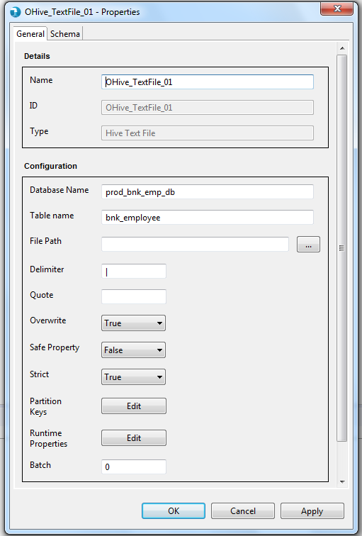
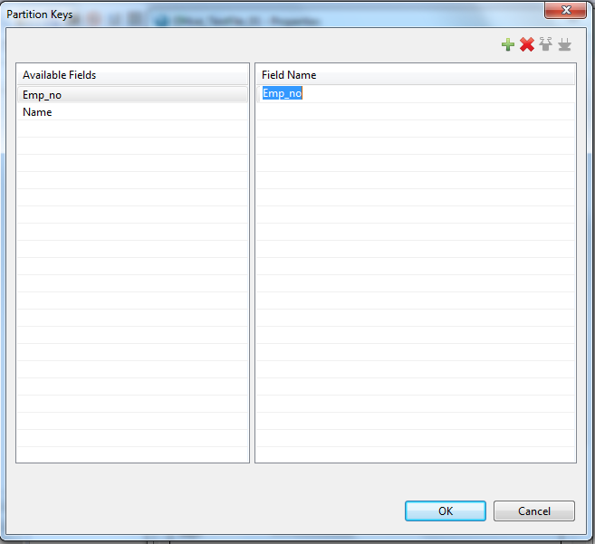
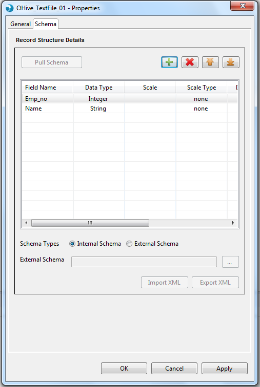
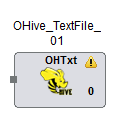
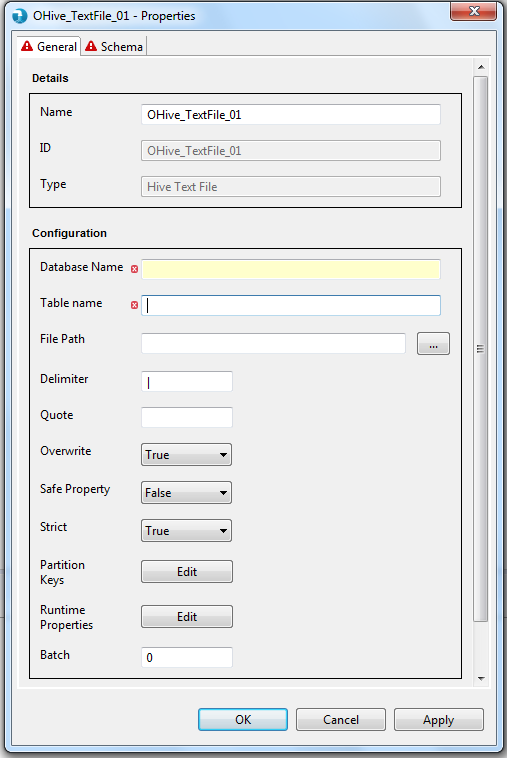
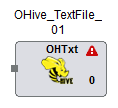

The properties contain a 'General' tab and a 'Schema' tab. Common properties are present in the General tab. Schema tab displays the option to accept the field schema i.e. field name, data type, scale etc.

Display
- Name - The identifier for the component. This is a mandatory property. This property is pre-populated with the component name, i.e. 'OHiveTextFile' followed by an incremental number. It can be changed to any custom name. The name property has following restrictions:
- Must be specified and should not be blank.
- Must be unique across the job.
- Accepts only alphabets (a-z), numerals (0-9) and 4 special characters: "_", "-", ",", " " (space)<./span>
- ID - ID field will specify unique id for every component.
- Type - Type defines the type of component within the category. This typically is the name of the component. This is a non editable field.
Configuration
- Database Name - Database Name is used to specify the Hive Database Name. User has to manually type the database name in the text box provided. Database name is a mandatory property.
- Table Name - Table Name is used to specify the Hive table Name. User has to manually type the table name in the text box provided. Table name is a mandatory property.
- External Table Path - External Table Path is used to specify the file path in case the table has been created as an external table. User has to manually type the path in the text box provided. External Table Path is an optional field.
- Delimiter - The Delimiter field accepts the delimiter for the table. The default value is 'CTRL+A'. Delimiter is an optional property.
- Quote - Quote field accepts the masked character used to mask the delimiter in the input file. When the quote is given, all the delimiters which are followed by this quote, will not be considered as delimiters rather considered as text. Quote is an optional property.
- Overwrite - This property accepts Boolean values True and False. It can also be parameterized and later on resolved during run-time. The Overwrite property when True, overwrites the output file.
- Safe Property - This property accepts Boolean values True and False. It can also be parameterized and later on resolved during run-time. The Safe property when True, allows the input fields to pass evaluation despite of Data type mismatch. When False, fields with Data type mismatch will be rejected and the component will abort processing returning an error.
- Strict - Strict accepts Boolean values True and False. It can also be parameterized and later on resolved during run-time. Strict property is used to check if the record structure i.e. number of fields, length of records, scale etc are exactly listed by the user as in the input file. When set to True, the component fails if the record structure doesn't match with the one specified by the user. Reverse in case of False.
- Partition Keys - Partition keys accepts the partition field names. The window also allows users to specify the partition field values to read filtered data. As per Hive requirement, the partition keys should always be at the end of the schema. The partition keys window validates whether the partition fields are at the end of the schema.

- Runtime Properties - Runtime properties are used to override the Hadoop configurations specific to Output Hive TextFile component at run time. User is required to enter the Property Name and Value in the runtime properties grid.

- Phase - Phase simply accepts a numeric value starting from 0 to maximum 99 and signifies the phase this component will execute in. By default this is 0.

Schema is mandatory for Output Hive Text File component. Schema tab defines the record format on the in port of the Output Hive Text File component. A field in schema has multiple attributes as described below.
- Internal - User is provided a Grid to enter the internal schema of the Input Delimited file.
- Field Name - User needs to enter all the Field names in this column.
- Data type - The data type for the field. This is a mandatory attribute. The default data type is "String". Check supported data types page for list of supported data types.
- Date Format - The format for date data type. Refer to Date formats page for acceptable date formats.
- Precision - Precision for a bigdecimal field can be specified here.
- Scale - Scale for a bigdecimal field can be specified here.
- Scale Type - Scale Type accepts values as implicit or explicit for bigdecimal field and none for other data types. Explicit considers the length of ' . ' and implicit ignores length of ' . ' for the bigdecimal field.
- Field Description - User can specify field description.
The Output Hive Text File component applies validations to the mandatory fields as described above. Upon placing the Output Hive Text File component on job canvas for the first time (from component palette), the component shows up a warning icon as mandatory properties are not provided.
The properties window also displays error icon on mandatory fields if it has an incorrect value. The error icon is displayed on the tab as well, if any of the field within the tab has some error.
If the properties window has some error even after user visit's it once, then the warning icon on the Output Hive Text File component on the job canvas changes to error icon. This error icon is removed only when all the mandatory fields are supplied with correct values.
